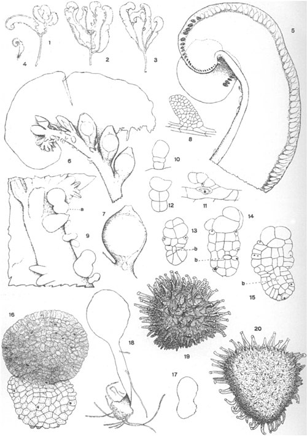

Riellaceae
Riella Liverworts / Water-shamrocks
Riellaceae is a highly specialized family of aquatic liverworts, unique within the order Sphaerocarpales (class Marchantiopsida). Containing the single genus Riella, these plants are adapted to submerged life, typically in temporary freshwater or brackish pools. They possess a distinctive morphology with an erect axis bearing a single, often ruffled wing.
Overview
The Riellaceae family consists solely of the genus Riella, which includes approximately 20-25 species. These liverworts are obligate aquatics, growing fully submerged. Their gametophyte structure is unlike any other liverwort, featuring an erect, stem-like axis anchored at the base by rhizoids, and bearing a single, thin, often undulating wing along its length. This unique form is an adaptation to their aquatic environment.
Riella species are found scattered across the globe, often in arid or semi-arid regions where temporary pools form after rainfall. They can tolerate fresh, brackish, or sometimes even saline water conditions. Like their terrestrial relatives in Sphaerocarpaceae, they are strictly dioicous, with separate male and female plants. Female plants bear archegonia enclosed in flask-shaped involucres along the axis, while male plants bear antheridia along the wing margin.
These plants survive dry periods as desiccation-resistant spores. Asexual reproduction via gemmae produced on the axis or wing occurs in some species. Their unique morphology and ecology make them fascinating subjects for studying adaptation and evolution in bryophytes.
Quick Facts
- Scientific Name: Riellaceae
- Common Name: Riella Liverworts, Water-shamrocks
- Number of Genera: 1 (Riella)
- Number of Species: Approximately 20-25
- Distribution: Scattered globally, often in arid/semi-arid regions with temporary freshwater or brackish pools (e.g., Mediterranean basin, SW North America, South Africa, Australia, Central Asia).
- Evolutionary Group: Bryophytes - Liverworts (Marchantiophyta) - Class Marchantiopsida - Order Sphaerocarpales
Key Characteristics
Growth Form and Habit
Plants are exclusively aquatic and submerged. The gametophyte is uniquely structured, consisting of an erect, simple or sparsely branched axis (resembling a stem), typically a few centimeters tall. Attached along one side of the axis is a single, broad, thin, often ruffled or undulating wing. The base of the axis produces rhizoids for anchorage. Plants are strictly dioicous.
Thallus Structure
The plant body is not a typical flattened thallus. It comprises the central axis (which can be cylindrical or somewhat flattened) and the unistratose (one cell layer thick) wing. The position of the wing (dorsal or ventral relative to the apical cell) varies between subgenera. Small, scale-like leaves (ventral scales) are present along the axis. There is no complex internal differentiation; air chambers and pores are absent.
Reproductive Structures
Plants are dioicous. Antheridia (male organs) are typically located along the thickened margin of the wing, often sunken within small pockets or notches. Archegonia (female organs) are borne individually along the central axis, not on the wing. Each archegonium becomes enclosed within a protective, persistent, flask-shaped or tubular involucre, similar in form to those of Sphaerocarpaceae but attached directly to the axis. Asexual reproduction by multicellular gemmae produced on the axis or wing margin occurs in some species.
Sporophyte and Spores
The sporophyte develops within the involucre on the female plant's axis. It is small, consisting of a foot, a very short seta, and a spherical capsule. The capsule wall is unistratose and disintegrates irregularly at maturity. Crucially, elaters are absent in Riellaceae. Spores are released singly (not in tetrads) when the capsule wall decays, often remaining temporarily within the protective involucre. The spores are typically ornamented and adapted for surviving desiccation when the temporary pools dry up.
Chemical Characteristics
Specific chemical profiles are not a primary focus for this family. Adaptations relate more to morphology and physiology for survival in aquatic, often temporary and potentially saline or alkaline, environments. Osmoregulation is important for species inhabiting brackish waters.
Field Identification
Identifying Riella species requires finding them in their specific aquatic habitats and recognizing their unique form:
Primary Identification Features
- Aquatic, submerged habit: Always found growing underwater.
- Erect axis with a single wing: Look for the upright "stem" with a ruffled "fin" running along one side.
- Flask-shaped involucres on axis: Female plants have these distinctive structures attached along the central axis.
- Antheridia on wing margin: Male plants have antheridia embedded along the edge of the wing (may require magnification).
- Absence of typical thallus or leaves: Does not look like a typical flattened liverwort or a leafy moss.
Secondary Identification Features
- Habitat: Temporary freshwater or brackish pools, ditches, rice paddies, often in arid/semi-arid climates.
- Small size: Usually only 1-5 cm tall.
- Dioicous populations: Male and female plants often grow together.
Seasonal Identification Tips
- Appearance: Strictly seasonal, appearing only when temporary water bodies are filled, often developing rapidly.
- Persistence: Gametophytes die when pools dry up; survival is via spores.
Common Confusion Points
- Aquatic vascular plants (e.g., pondweeds, hornworts): Have much more complex structures, roots, flowers/seeds, or different leaf arrangements.
- Filamentous algae (e.g., Spirogyra, Cladophora): Lack the organized structure of an axis, wing, rhizoids, and involucres.
- Riccia fluitans / Ricciocarpos natans: These are floating or submerged thalloid liverworts, but they branch dichotomously and lack the erect axis/wing structure and individual involucres.
- Aquatic mosses (e.g., Fontinalis): Have distinct stems and leaves (usually in 3 ranks), different sporophyte structure.
Field Guide Quick Reference
Look For:
- Submerged aquatic plant
- Erect axis + single ruffled wing
- Flask-like involucres on axis (female)
- Antheridia on wing edge (male)
- Temporary pools / brackish water
Key Distinctions:
- Unique axis/wing structure unlike any other bryophyte or alga.
- Aquatic habit distinguishes from terrestrial relatives (Sphaerocarpaceae).
Notable Examples (Genus Riella)
All members of the family belong to the genus Riella:

Riella helicophylla
(No common name)
A species found around the Mediterranean basin and adjacent regions. It is known for its relatively broad wing that often twists helically around the axis. It grows in temporary freshwater or slightly brackish pools.

Riella americana
American Riella
Found in temporary pools in arid and semi-arid regions of the southwestern United States (e.g., Texas, California) and Mexico. Its morphology is typical of the genus, adapted to survive long dry periods as spores.
Phylogeny and Classification
Riellaceae is placed in the order Sphaerocarpales, alongside its sister family, the terrestrial Sphaerocarpaceae. This phylogenetic position within the class Marchantiopsida indicates that the highly specialized aquatic morphology of Riella evolved from a terrestrial ancestor likely resembling members of Sphaerocarpaceae. The Sphaerocarpales lineage itself is considered an early diverging branch within the Marchantiopsida.
The unique body plan of Riella (erect axis with a single wing) represents a remarkable adaptation to a fully submerged aquatic lifestyle, contrasting sharply with the simple, prostrate thalli of its closest relatives. Studying Riellaceae provides valuable insights into morphological plasticity and adaptive evolution within the liverworts.
Position in Plant Phylogeny
- Kingdom: Plantae
- Clade: Embryophytes (Land plants)
- Division: Marchantiophyta (Liverworts)
- Class: Marchantiopsida
- Order: Sphaerocarpales
- Family: Riellaceae
Evolutionary Significance
Riellaceae is evolutionarily significant due to:
- Extreme Morphological Specialization: Represents a unique adaptation to aquatic life among liverworts, diverging significantly from its terrestrial relatives.
- Adaptation to Ephemeral/Extreme Habitats: Demonstrates strategies for survival in temporary and sometimes saline/alkaline water bodies.
- Phylogenetic Link: Clearly links a highly derived aquatic form to a terrestrial lineage (Sphaerocarpaceae) within an early-branching order of Marchantiopsida.
- Model for Studying Adaptation: Provides insights into the genetic and developmental changes underlying major morphological shifts in response to environmental pressures.